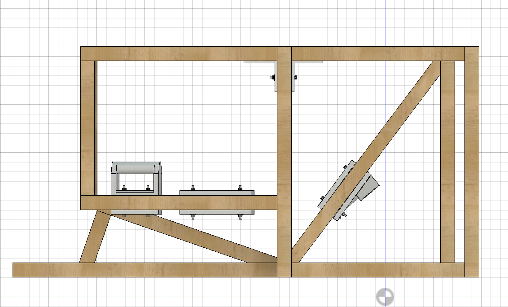
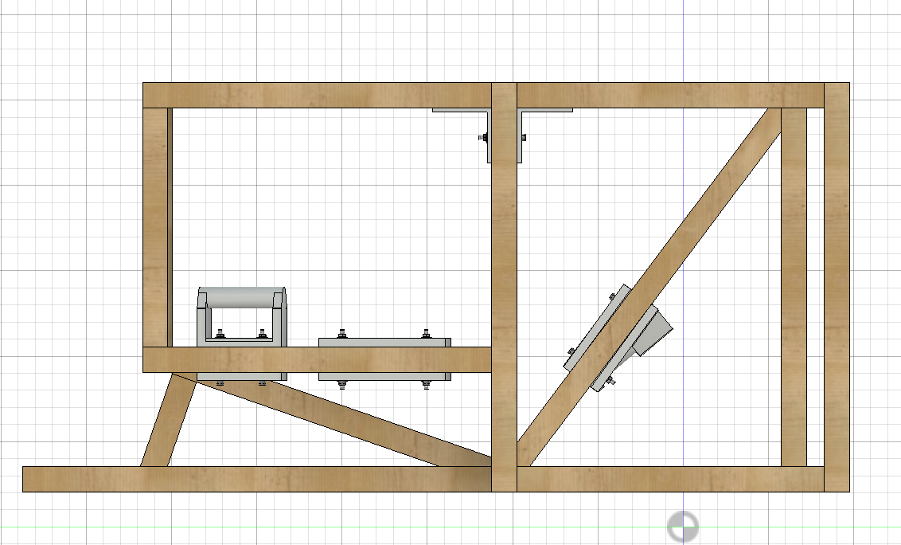

Unfortunately, I could only complete the rig's frame before I ran out of time and my parents' patience. Nevertheless, I learned a few lessons when building this prototype. (The photos above do not match the CAD 100% because I updated the rig on CAD, which I didn't get to in real life.)
1. 2x2 Wood is not as Strong as you think.
While the advantages of using 2x2 wood are its relative strength compared to its weight, the compromise is that there is a minimal surface area to connect pieces to. Only using one screw to attach pieces also allows it to rotate. This resulted in corners that were quite flimsy. While I fixed the issue by attaching 90-degree braces to hold the rig's shape, this issue was overlooked during the rig's design.
2. Fusion 360 to Life Miscorrelation
It is difficult to get a rig square - While it is easy to add angles and crazy parts in CAD, these are hard to replicate in real life. Even a 90-degree corner is tricky, as the wood may not be 100% square. Initially, the angle from the back to the front was a curve (don't ask me how I would do that), which would have been a nightmare. You can tell in the first photo that the rig looks slightly off even when finished.
3. Dont Underestimate Your Weight
Initially, the three protruding parts from the bottom were two parts and closer together. This was a massive oversight as the weight was highly concentrated in the middle of the rig. This meant that those pieces broke when pressure was put on the sides. As shown in the CAD above, I modified this to three and spread more evenly apart, allowing from the weight to be distributed properly.
 
